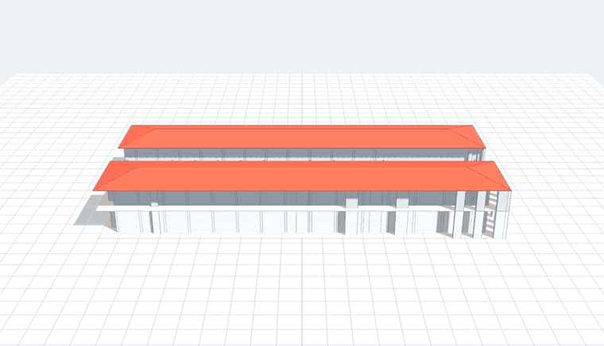

A simple 3D massing of the building, built from your concept drawings. — Happy Father's Day.

A short spinning preview of the model.
▶ Open the interactive 3D modelIt opens right here in your browser — then you can drag to spin it, scroll to zoom, and hold the right mouse button and move to slide it around (pan).
This is a SCHEMATIC massing (a study block-model) for visualizing the overall form — two masses around an open courtyard, with the new hipped roof. It is not a construction document. Heights are taken from your concept section (1st floor ~15′, 2nd-floor ceiling ~11′, ~34′ overall).